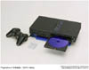
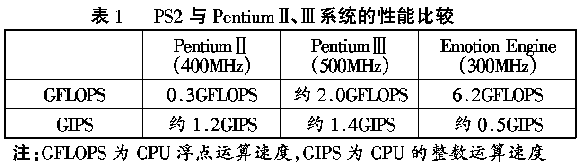

|
|
| 当前位置：电脑报电子版 > 1999 年 > 43 期 > 硬件周刊 > PS2——电脑游戏的终结者 |
| 《 PS2——电脑游戏的终结者 》 |
| 对于游戏玩家来说，除了电脑游戏以外还有其他更好的游戏吗？答案是肯定的。当我看到SONY最新展示的PlayStation2（以下简称PS2）的游戏图片与动画的效果后，我被深深地震撼。我认为把PS2称为电脑游戏的杀手一点都不过分，不知道电脑游戏的开发商们和电脑配件制造商们看到PS2后有什么感想。 9月13日，SONY正式公布了次世代家用电子游戏主机“PS2”的相关资料及造型，SONY 将凭借PS2将再次以其优秀的性能继续占据原有PS（PlayStation）遍及全球6000万台的巨大市场。PS2将在明年3月4日正式发售，预定售价39800日元（折合人民币约3100元）。PS2能够运行PS2/PS的游戏、播放音乐CD及DVD影片，此外还附赠一支PS2专用摇杆及8MB记忆卡。关于PlayStation2，现在只能是雾里看花，许多细节SONY都没有公布，就连PlayStation2这个名称都是人们对SONY下一代游戏机的简称，SONY官方并没有确定这部次世代游戏主机的名字。 一、PS2的基本技术规格： CPU：128位“Emotion Engine”，主频294.912MHz内存：32MB Direct RDRAM 图形处理器：Synthesize，主频147.456MHz 显示内存：4MB 嵌入式Cache VRAM 音频处理器 SPU2，硬件支持48个声道 音频内存：2MB I/O处理器：R3000A（MIPS 公司设计生产的32位RISC CPU，也就是PlayStation的CPU！），主频33.8688 MHz 储存媒体：4倍速DVD－ROM 2个游戏手柄接口/2个内存卡插槽/1个AV多线缆输出口/1个光纤数字输出口/2个USB接口/1个I－Link（SONY一般称为IEEE 1394F或Firewire）/1个Type Ⅲ PCMCIA插槽 二、图形引擎和CPU PS2的图形芯片由SONY和TOSHIBA两家合作开发，主芯片由一个Digital Signal Processor (DSP，数字信号处理器)和一个基于RISC指令(Reduced Instruction Set Computer，精简指令集)的处理器组成。据SONY称，该处理器3D处理能力是SEGA次世代游戏主机DreamCast的50倍！即使与当前的PC图形芯片相比，SONY也遥遥领先。Emotion Engine处理器浮点运算能力为6.2G FLOPS/s，是Intel PentiumⅢ的三倍多，每秒可生成7500万个多边形(Voodoo3三角形生成率为800万个三角形），并配备下一代的Direct Rambus内存，数据吞吐量为3.2GB，带宽是PC100 SDRAM的4倍。DSP处理器时钟为250MHz，集成有1千万个晶体管，有14个累加器以处理浮点运算，这有助于3D图形的数学处理。另外，PS2采用了非常先进的图形处理技术NURBS，NURBS（No－Uniform Ration B－spline）允许开发人员定义场景中物体的3D平面。目前我们只能在电视上看见应用这个技术的3D跑车模型，而PS2实现NURBS之后，游戏中的人物将如同《玩具总动员》中的动画人物一样圆滑流畅。 RISC微处理器时钟为250MHz，有两个超标量通道，支持100多个新的多媒体扩展指令，芯片内建一个8K Cache，一个16K命令Cache和一个16K内部RAM。相比而言，Sega的主力机型DreamCast也采用了64bit Risc SH－6处理器，但时钟只有200MHz。 三、周边设备 1．储存载体：PS2有两个驱动器，CD－ROM和DVD－RAM，既可以竖放也可以平放，就像塔形PC。PS2采用了MPEG2编码，支持DVD格式，尽管SONY并没有说明PS2是否可以播放DVD电影，但支持DVD回放的可能性相当大。 四、PS2与PC硬件系统和游戏性能的比较 光是有了PS2的数据也许你还不能完全了解PS2的强大功能，为了让大家看得更清楚彻底，我们可以看看 PS2的CPU“Emoton Engine” (300MHz)与PentiumⅡ(400MHz)、PentiumⅢ(500MHz) 的对比。从对比中可以看出PS2的整数运算能力在三款CPU中最差，但使用游戏已绰绰有余。我们都知道在3D方面，真正起关键作用的还是浮点运算能力。INTEL一直都在标榜它自己的CPU浮点运算能力如何的强，3D性能是如何的好，但比起PS2 300MHz的Emoton Engine CPU来，PC的硬件系统难以望其项背（见表1）。在游戏效果方面，PS2目前的表现还无法真正体验，我们只能以PS2的上一代产品PS的游戏来与PC游戏做一些比较。关于PC游戏和PS游戏哪个更好玩的问题已经争论很久，虽然很多人认为PC游戏的画面更漂亮，但是PS模拟器的火爆，使我们认识到在游戏性方面，PC游戏比PS游戏还差得很远。而且长期以来，PS游戏的支持厂商就不少，SONY在公布PS2规格之后，宣布加盟PS2的游戏厂商目前已有162家。另外PS2向下兼容以前PS的游戏，虽然并不能提高游戏画质，但可以在新的PS2上使用老的手柄，内存卡和Pocketstation。因而我认为，真正注重游戏效果的玩家还是会选择PS2的。 五、结语 PS2在游戏方面的性能表现和前景是无与伦比的，在下个世纪，随着办公自动化的进一步完善，人们将有更多的时间来进行娱乐，届时PS2在游戏方面必然会对家用电脑造成巨大的冲击。除了游戏，将来家庭休闲娱乐的另一个重要方面就是上网浏览信息，而PS2具备了网络扩展功能，可以使用与电脑接口类似的各种网络联接设备，因此PS2在这一方面对家用电脑的冲击也很明显。诚然，PS2代表着将来电子产品的一个趋势，那就是家电化、网络化、娱乐化、操作简单化。或许到了下个世纪初，大家真的没有必要再买一台功能齐全、体积庞大的台式PC机用了。（湖北 ION） |
| 下载本期推荐软件 | 页 首 |
| 《电脑报》版权所有，电脑报网站编辑部设计制作发布 |
{kind=link}